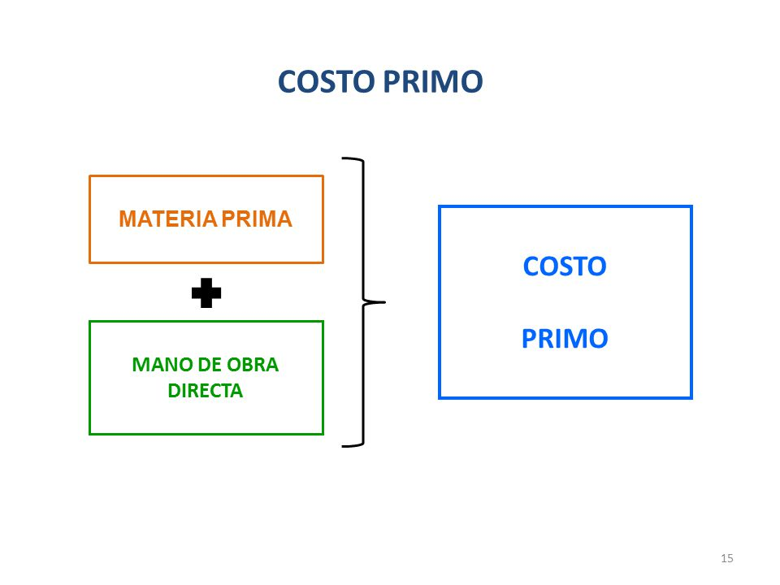

Cousin cost
The primary cost is the result of adding the raw material and the cost of direct labor. In the industrial companies, to determine the cost of production it is necessary to elaborate a state of costs, in which expenditures are considered as the raw material and direct labor, factors that together are known as prime cost, which is one of the parts of the cost statement. Within the personnel expenses that make up the direct labor, all the concepts paid to them are included, such as salaries, social benefits, social security, parafiscal contributions, endowment, etc.

The structure of the first cost will then be:
Raw material: xxx
(+) Direct labor: xxx
(=) Prime cost